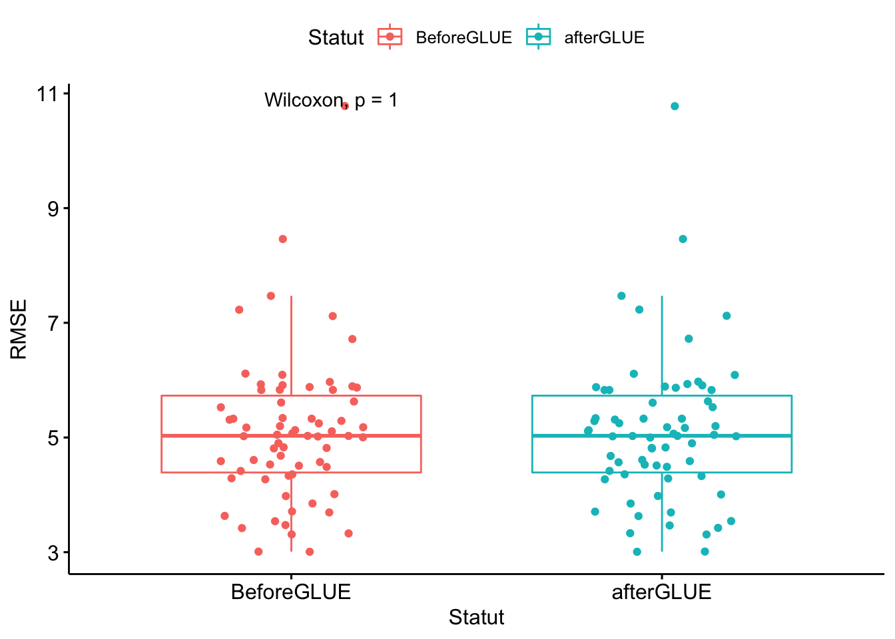

Last updated: 2023-04-10
Checks: 7 0
Knit directory: RDSSATMICH/
This reproducible R Markdown analysis was created with workflowr (version 1.7.0). The Checks tab describes the reproducibility checks that were applied when the results were created. The Past versions tab lists the development history.
Great! Since the R Markdown file has been committed to the Git repository, you know the exact version of the code that produced these results.
Great job! The global environment was empty. Objects defined in the global environment can affect the analysis in your R Markdown file in unknown ways. For reproduciblity it’s best to always run the code in an empty environment.
The command set.seed(20211116) was run prior to running
the code in the R Markdown file. Setting a seed ensures that any results
that rely on randomness, e.g. subsampling or permutations, are
reproducible.
Great job! Recording the operating system, R version, and package versions is critical for reproducibility.
Nice! There were no cached chunks for this analysis, so you can be confident that you successfully produced the results during this run.
Great job! Using relative paths to the files within your workflowr project makes it easier to run your code on other machines.
Great! You are using Git for version control. Tracking code development and connecting the code version to the results is critical for reproducibility.
The results in this page were generated with repository version 6657f9a. See the Past versions tab to see a history of the changes made to the R Markdown and HTML files.
Note that you need to be careful to ensure that all relevant files for
the analysis have been committed to Git prior to generating the results
(you can use wflow_publish or
wflow_git_commit). workflowr only checks the R Markdown
file, but you know if there are other scripts or data files that it
depends on. Below is the status of the Git repository when the results
were generated:
Ignored files:
Ignored: .DS_Store
Ignored: .RData
Ignored: .Rhistory
Ignored: .Rproj.user/
Ignored: CUL_files/.DS_Store
Ignored: Cassava/.DS_Store
Ignored: Cassava/Evaluate.OUT
Ignored: Cassava/FreshWt.OUT
Ignored: Cassava/INFO.OUT
Ignored: Cassava/Leaves.OUT
Ignored: Cassava/Measured.OUT
Ignored: Cassava/MgmtEvent.OUT
Ignored: Cassava/MgmtOps.OUT
Ignored: Cassava/Mulch.OUT
Ignored: Cassava/Overview.OUT
Ignored: Cassava/PlantGr2.OUT
Ignored: Cassava/PlantGrf.OUT
Ignored: Cassava/PlantGro.OUT
Ignored: Cassava/Plantsum.OUT
Ignored: Cassava/SoilCBal.OUT
Ignored: Cassava/SoilCBalSum.OUT
Ignored: Cassava/SoilOrg.OUT
Ignored: Cassava/SoilTemp.OUT
Ignored: Cassava/SoilWat.OUT
Ignored: Cassava/SoilWatBal.OUT
Ignored: Cassava/Summary.OUT
Ignored: Cassava/Tiers.OUT
Ignored: Cassava/WARNING.OUT
Ignored: Cassava/Weather.OUT
Ignored: Evaluate.OUT
Ignored: FreshWt.OUT
Ignored: INFO.OUT
Ignored: Leaves.OUT
Ignored: Measured.OUT
Ignored: MgmtEvent.OUT
Ignored: MgmtOps.OUT
Ignored: Mulch.OUT
Ignored: Needhelp.R
Ignored: OVERVIEW.OUT
Ignored: PlantGr2.OUT
Ignored: PlantGrf.OUT
Ignored: PlantGro.OUT
Ignored: Plantsum.OUT
Ignored: Result/.DS_Store
Ignored: Result/PlotGLUE/
Ignored: Result/PlotLocat_GLUEHWAM/.DS_Store
Ignored: SoilCBal.OUT
Ignored: SoilCBalSum.OUT
Ignored: SoilOrg.OUT
Ignored: SoilTemp.OUT
Ignored: SoilWat.OUT
Ignored: SoilWatBal.OUT
Ignored: Summary.OUT
Ignored: Tiers.OUT
Ignored: WARNING.OUT
Ignored: Weather.OUT
Ignored: Weather/.DS_Store
Ignored: data/.DS_Store
Ignored: data/CSfiles/.DS_Store
Ignored: data/DSSATtempfile/.DS_Store
Ignored: data/IITA2021_CABASE/.DS_Store
Ignored: data/IITA2021_Mich/.DS_Store
Ignored: data/IITA2021_Mich/CGM_Data/.DS_Store
Ignored: data/IITA2021_Mich/CGM_Data/D21J/.DS_Store
Ignored: data/IITA2021_Mich/CGM_Data/MichelData/.DS_Store
Ignored: data/IITA2021_Mich/CGM_Data/Set_A/.DS_Store
Ignored: data/IITA2021_Mich/CGM_Data/Set_B/.DS_Store
Ignored: data/IITA2021_Mich/Leaf/.DS_Store
Ignored: data/IITA2021_Mich/Leaf/Area/.DS_Store
Ignored: data/WEATHERdata/.DS_Store
Unstaged changes:
Modified: ET.OUT
Modified: data/CSfiles/UYAB1901.CSA
Modified: data/CSfiles/UYAB1901.CST
Modified: data/CSfiles/UYAG1701.CSA
Modified: data/CSfiles/UYAG1701.CST
Modified: data/CSfiles/UYAG1801.CSA
Modified: data/CSfiles/UYAG1801.CST
Modified: data/CSfiles/UYAG1901.CSA
Modified: data/CSfiles/UYAG1901.CST
Modified: data/CSfiles/UYIB1701.CSA
Modified: data/CSfiles/UYIB1701.CST
Modified: data/CSfiles/UYIB1801.CSA
Modified: data/CSfiles/UYIB1801.CST
Modified: data/CSfiles/UYIB1901.CSA
Modified: data/CSfiles/UYIB1901.CST
Modified: data/CSfiles/UYIB2001.CSA
Modified: data/CSfiles/UYIB2001.CST
Modified: data/CSfiles/UYIK1701.CSA
Modified: data/CSfiles/UYIK1701.CST
Modified: data/CSfiles/UYIK1801.CSA
Modified: data/CSfiles/UYIK1801.CST
Modified: data/CSfiles/UYIK1901.CSA
Modified: data/CSfiles/UYIK1901.CST
Modified: data/CSfiles/UYKA1801.CSA
Modified: data/CSfiles/UYKA1801.CST
Modified: data/CSfiles/UYMO1701.CSA
Modified: data/CSfiles/UYMO1701.CST
Modified: data/CSfiles/UYMO1801.CSA
Modified: data/CSfiles/UYMO1801.CST
Modified: data/CSfiles/UYMO1901.CSA
Modified: data/CSfiles/UYMO1901.CST
Modified: data/CSfiles/UYON1801.CSA
Modified: data/CSfiles/UYON1801.CST
Modified: data/CSfiles/UYON1901.CSA
Modified: data/CSfiles/UYON1901.CST
Modified: data/CSfiles/UYOT1801.CSA
Modified: data/CSfiles/UYOT1801.CST
Modified: data/CSfiles/UYUB1901.CSA
Modified: data/CSfiles/UYUB1901.CST
Modified: data/CSfiles/UYUM1801.CSA
Modified: data/CSfiles/UYUM1801.CST
Modified: data/CSfiles/UYZA1901.CSA
Modified: data/CSfiles/UYZA1901.CST
Note that any generated files, e.g. HTML, png, CSS, etc., are not included in this status report because it is ok for generated content to have uncommitted changes.
These are the previous versions of the repository in which changes were
made to the R Markdown (analysis/Paper_Tables.Rmd) and HTML
(docs/Paper_Tables.html) files. If you’ve configured a
remote Git repository (see ?wflow_git_remote), click on the
hyperlinks in the table below to view the files as they were in that
past version.
| File | Version | Author | Date | Message |
|---|---|---|---|---|
| Rmd | c096d84 | Michelle Okoma | 2023-04-10 | Initial commit |
| Rmd | 5a6fcbc | Michelle Okoma | 2023-04-10 | Initial commit |
| Rmd | 9333df1 | Michelle Okoma | 2023-04-10 | Initial project |
library(tidyverse)── Attaching packages ─────────────────────────────────────── tidyverse 1.3.2 ──
✔ ggplot2 3.3.6 ✔ purrr 0.3.5
✔ tibble 3.1.8 ✔ dplyr 1.0.10
✔ tidyr 1.2.1 ✔ stringr 1.4.1
✔ readr 2.1.2 ✔ forcats 0.5.2
── Conflicts ────────────────────────────────────────── tidyverse_conflicts() ──
✖ dplyr::filter() masks stats::filter()
✖ dplyr::lag() masks stats::lag()library(DSSAT)
When using the 'DSSAT' package for publications please cite all of the
following:
Alderman, P.D. 2021. DSSAT: A Comprehensive R Interface for the DSSAT
Cropping Systems Model. R package version 0.0.6.
https://CRAN.R-project.org/package=DSSAT.
Alderman, P.D. 2020. "A Comprehensive R Interface for the DSSAT
Cropping Systems Model." Computers and Electronics in Agriculture
172: 105325. DOI: 10.1016/j.compag.2020.105325. URL:
https://www.sciencedirect.com/science/article/pii/S0168169919323075.
Jones, J.W., G. Hoogenboom, C.H. Porter, K.J. Boote, W.D. Batchelor,
L.A. Hunt, P.W. Wilkens, U. Singh, A.J. Gijsman, and J.T. Ritchie.
2003. "The DSSAT Cropping System Model." European Journal of Agronomy
18 (3-4): 235-265.
Hoogenboom, G., C.H. Porter, K.J. Boote, V. Shelia, P.W. Wilkens, U.
Singh, J.W. White, S. Asseng, J.I. Lizaso, L.P. Moreno, W. Pavan, R.
Ogoshi, L.A. Hunt, G.Y. Tsuji, and J.W. Jones. 2019. "The DSSAT Crop
Modeling Ecosystem." In: Advances in Crop Modeling for a Sustainable
Agriculture, edited by Kenneth J Boote, 173–216. Cambridge, United
Kingdom: Burleigh Dodds Science Publishing.
Hoogenboom, G., C.H. Porter, V. Shelia, K.J. Boote, U. Singh, J.W.
White, W. Pavan, F.A.A. Oliveira, L.P. Moreno-Cadena, J.I. Lizaso, S.
Asseng, D.N.L. Pequeno, B.A. Kimball, P.D. Alderman, K.R. Thorp, M.R.
Jones, S.V. Cuadra, M.S. Vianna, F.J. Villalobos, T.B. Ferreira, J.
Koo, L.A. Hunt, and J.W. Jones. <YEAR>. Decision Support System for
Agrotechnology Transfer (DSSAT) Version <VERSION>. Gainesville,
Florida, USA: DSSAT Foundation. https://DSSAT.net.
For BibTeX entries use toBibtex(citation("DSSAT"))
A DSSAT-CSM executable was found here:
/Users/mo367/Desktop/Analy_project/RDSSATMICH/dscsm048
If this is not the correct executable, please use
options(DSSAT.CSM="//path/to/executable")
to set the proper location and file name for DSSAT-CSM.library(corrplot)corrplot 0.92 loadedlibrary(ggpubr)
library(lemon)
Attaching package: 'lemon'
The following object is masked from 'package:purrr':
%||%
The following objects are masked from 'package:ggplot2':
CoordCartesian, element_renderlibrary(hydroGOF)Loading required package: zoo
Attaching package: 'zoo'
The following objects are masked from 'package:base':
as.Date, as.Date.numericlibrary(zoo)
library(rsq)EVALana2 <- read_csv("data/EVALana2.csv")Rows: 899 Columns: 44
── Column specification ────────────────────────────────────────────────────────
Delimiter: ","
chr (3): source, Clone, EXCODE
dbl (41): TRNO, HWAMS, HWAMM, LAIXS, LAIXM, CWAMS, CWAMM, TMIN, TMAX, SRAD, ...
ℹ Use `spec()` to retrieve the full column specification for this data.
ℹ Specify the column types or set `show_col_types = FALSE` to quiet this message.ENVinfo <- EVALana2 %>%
mutate(ENVI = source) %>%
dplyr::select(ENVI, LONG, LAT, TMIN, TMAX, RAIN, RH2M, SRAD, PAR, WIND) %>%
group_by(ENVI) %>%
dplyr::summarise(across(c(LONG, LAT, TMIN, TMAX, RAIN,RH2M, SRAD, PAR, WIND),
unique, na.rm=TRUE)) %>%
mutate("Geo Loc" = paste0(round(LAT, digits = 2), "°", "N, ", round(LONG, digits = 2),"°", "E"),
#"LONG (°E)" = round(LAT, digits = 2),
"TMIN (°C)" = round(TMIN, digits = 1),
"TMAX (°C)"= round(TMAX, digits = 1),
"RAIN (mm)" = round(RAIN, digits = 1),
"RH2M (%)" = round(RH2M, digits = 1),
"SRAD (MJ/m^2/day)" = round(SRAD, digits = 1),
"PAR (W/m^2)" = round(PAR, digits = 1),
"WIND (m/s)" = round(WIND, digits = 1))
ENVinfo$Location <- ENVinfo$ENVI
ENVinfo$Location[grep(pattern = "^Abu", x = ENVinfo$ENVI)] <- "ABUJA"
ENVinfo$Location[grep(pattern = "^Ago", x = ENVinfo$ENVI)] <- "AGO-OWU"
ENVinfo$Location[grep(pattern = "^Ibad", x = ENVinfo$ENVI)] <- "IBADAN"
ENVinfo$Location[grep(pattern = "^Iken", x = ENVinfo$ENVI)] <- "IKENNE"
ENVinfo$Location[grep(pattern = "^Kan", x = ENVinfo$ENVI)] <- "KANO"
ENVinfo$Location[grep(pattern = "^Mokw", x = ENVinfo$ENVI)] <- "MOKWA"
ENVinfo$Location[grep(pattern = "^Onn", x = ENVinfo$ENVI)] <- "ONNE"
ENVinfo$Location[grep(pattern = "^Otob", x = ENVinfo$ENVI)] <- "OTOBI"
ENVinfo$Location[grep(pattern = "^Ubia", x = ENVinfo$ENVI)] <- "UBIAJA"
ENVinfo$Location[grep(pattern = "^Umud", x = ENVinfo$ENVI)] <- "UMUDIKE"
ENVinfo$Location[grep(pattern = "^Zar", x = ENVinfo$ENVI)] <- "ZARIA"
ENVinform <- ENVinfo %>%
mutate(YEAR = paste0(20,as.numeric(str_extract(ENVI, "\\d{2}+")),"-",20,as.numeric(str_extract(ENVI, "\\d{2}+"))+1),
"Soil" = case_when(Location == "ABUJA" ~ "SCL",
Location == "AGO-OWU" ~ "SCL",
Location == "IBADAN" ~ "SL",
Location == "IKENNE" ~ "CL",
Location == "KANO" ~ "SL",
Location == "MOKWA" ~ "SCL",
Location == "ONNE" ~ "SCL",
Location == "OTOBI" ~ "CL",
Location == "UBIAJA" ~ "SCL",
Location == "UMUDIKE" ~ "SCL",
Location == "ZARIA" ~ "SCL"),
"Planting Date" = case_when(ENVI == "Abuja19" ~ "June 2019",
ENVI == "Ago17" ~ "August 2017",
ENVI == "Ago18" ~ "June 2018",
ENVI == "Ago19" ~ "June 2019",
ENVI == "Ibadan17" ~ "September 2017",
ENVI == "Ibadan18" ~ "July 2018",
ENVI == "Ibadan19" ~ "May 2019",
ENVI == "Ikenne17" ~ "August 2017",
ENVI == "Ikenne18" ~ "June 2018",
ENVI == "Ikenne19" ~ "June 2019",
ENVI == "Kano18" ~ "July 2018",
ENVI == "Mokwa17" ~ "August 2017",
ENVI == "Mokwa18" ~ "January 2018",
ENVI == "Mokwa19" ~ "June 2019",
ENVI == "Onne18" ~ "April 2018",
ENVI == "Otobi18" ~ "July 2018",
ENVI == "Ubiaja19" ~ "June 2019",
ENVI == "Umudike18" ~ "July 2018",
ENVI == "Zaria19" ~ "June 2019")) %>%
dplyr::select(Location, "Geo Loc", "Soil", YEAR, ENVI, "Planting Date", "TMIN (°C)", "TMAX (°C)", "RAIN (mm)", "RH2M (%)", "SRAD (MJ/m^2/day)", "PAR (W/m^2)", "WIND (m/s)")
write.csv(ENVinform, "data/Paper_Table1.csv", quote = T, row.names = F)GSP set, the the minimum and the maximum values for each parameter
MyCUL1 <- read_lines(here::here("CSYCA048.CUL"), skip = 42, n_max = 67)
write_lines(MyCUL1, (here::here("MyCUL1.txt")))
MyCUL2 <- read.table(here::here("MyCUL1.txt"), header = FALSE, sep = "", dec = ".")
MyCUL3 <- MyCUL2 %>% filter(str_detect(V1, "UC00")) %>%
mutate(Cultivar = V2, Ecogrp = V4, B01ND = round(V5, 0), B12ND = round(V6, 0), B23ND = round(V7, 0), B34ND = round(V8, 0), BR1FX = V9, BR2FX = V10, BR3FX = V11, BR4FX = V12, LAXS = round(V13, 0), SLAS = round(V14, 0), LLIFA = round(V15, 0), LPEFR = round(V16, 2), LNSLP = round(V17, 2), NODWT = round(V18, 2), NODLT = round(V19, 2)) %>%
dplyr::select(Cultivar, Ecogrp, B01ND, B12ND, B23ND, B34ND, BR1FX, BR2FX, BR3FX, BR4FX, LAXS, SLAS, LLIFA, LPEFR, LNSLP, NODWT, NODLT) %>%
mutate(Ecogrp = as.character(Ecogrp), V4B01ND = as.numeric(B01ND), B12ND = as.numeric(B12ND), B23ND = as.numeric(B23ND), B34ND = as.numeric(B34ND), BR1FX = as.numeric(BR1FX), BR2FX = as.numeric(BR2FX), BR3FX = as.numeric(BR3FX), BR4FX = as.numeric(BR4FX), LAXS = as.numeric(LAXS), SLAS = as.numeric(SLAS), LLIFA = as.numeric(LLIFA), LPEFR = as.numeric(LPEFR), LNSLP = as.numeric(LNSLP), NODWT = as.numeric(NODWT), NODLT = as.numeric(NODLT))
min_max <- list(
min = ~min(.x, na.rm = TRUE),
max = ~max(.x, na.rm = TRUE)
)
MyCUL4 <- MyCUL3 %>% group_by(Ecogrp) %>%
summarise(across(where(is.numeric), min_max, .names = "{.fn}.{.col}"))
MyECO1 <- read_lines(here::here("CSYCA048.ECO"), skip = 36, n_max = 15)
write_lines(MyECO1, (here::here("MyECO1.txt")))
MyECO2 <- read.table(here::here("MyECO1.txt"), header = FALSE, sep = "", dec = ".")
MyECO3 <- MyECO2 %>% mutate(Ecogrp = V1, PARUE = V3, KCAN = V6) %>%
dplyr::select(Ecogrp, PARUE, KCAN) %>%
mutate(Ecogrp = as.character(Ecogrp),
PARUE = as.numeric(PARUE),
KCAN = as.numeric(KCAN))
MyCUL4 <- left_join(MyCUL4, MyECO3) Joining, by = "Ecogrp"MyCUL5 <- MyCUL4 %>% mutate(B01ND = paste0(min.B01ND," - ",max.B01ND),
B12ND = paste0(min.B01ND," - ",max.B12ND),
B23ND = paste0(min.B23ND," - ",max.B23ND),
B34ND = paste0(min.B34ND," - ",max.B34ND),
BR1FX = paste0(min.BR1FX," - ",max.BR1FX),
BR2FX = paste0(min.BR2FX," - ",max.BR2FX),
BR3FX = paste0(min.BR3FX," - ",max.BR3FX),
BR4FX = paste0(min.BR4FX," - ",max.BR4FX),
LAXS = paste0(min.LAXS," - ",max.LAXS),
SLAS = paste0(min.SLAS," - ",max.SLAS),
LLIFA = paste0(min.LLIFA," - ",max.LLIFA),
LPEFR = paste0(min.LPEFR," - ",max.LPEFR),
LNSLP = paste0(min.LNSLP," - ",max.LNSLP),
NODWT = paste0(min.NODWT," - ",max.NODWT),
NODLT = paste0(min.NODLT," - ",max.NODLT)) %>%
#Ecotype = case_when(Ecogrp == "990016" ~ "Ecotype 1",
# Ecogrp == "990017" ~ "Ecotype 2",
# Ecogrp == "990018" ~ "Ecotype 3",
# Ecogrp == "990019" ~ "Ecotype 4",
# Ecogrp == "990020" ~ "Ecotype 5",
# Ecogrp == "990021" ~ "Ecotype 6",
# Ecogrp == "990022" ~ "Ecotype 7",
# Ecogrp == "990023" ~ "Ecotype 8",
# Ecogrp == "990024" ~ "Ecotype 9",
# Ecogrp == "990025" ~ "Ecotype 10",
# Ecogrp == "990026" ~ "Ecotype 11")) %>%
dplyr::select(B01ND, B12ND, B23ND, B34ND, BR1FX, BR2FX, BR3FX, BR4FX, LAXS, SLAS, LLIFA, LPEFR, LNSLP, NODWT, NODLT, PARUE, KCAN)
MyCUL6 <- t(MyCUL5)
colnames(MyCUL6) <- MyCUL6[1, ]
MyCUL6 <- MyCUL6 %>%
as.data.frame %>%
rownames_to_column("Coefficient")
#MyCUL6 = MyCUL6[-1, ]
MyCUL7 <- MyCUL6 %>% mutate(Definition =
dplyr::case_when(Coefficient == "B01ND" ~ "Duration from planting to first forking (thermal units)",
Coefficient == "B12ND" ~ "Duration from first forking to second forking (thermal units)",
Coefficient == "B23ND" ~ "Duration from second forking to third forking (thermal units)",
Coefficient == "B34ND" ~ "Duration from second forking to third forking (thermal units)",
Coefficient == "BR1FX" ~ "Branch number per fork at fork 1 (no.)",
Coefficient == "BR2FX" ~ "Branch number per fork at fork 2 (no.)",
Coefficient == "BR3FX" ~ "Branch number per fork at fork 3 (no.)",
Coefficient == "BR4FX" ~ "Branch number per fork at fork 4 (no.)",
Coefficient == "LAXS" ~ "Area/leaf at maximum area/leaf, cm2",
Coefficient == "SLAS" ~ "Specific leaf lamina area when crop growing without stress, cm2 g−1",
Coefficient == "LLIFA" ~ "Leaf life, from full expansion to start senescence (thermal units)",
Coefficient == "LPEFR" ~ "Leaf-petiole weight fraction (no.)",
Coefficient == "LNSLP" ~ "Slope for leaf production (no.)",
Coefficient == "NODWT" ~ "Individual node weight (g)",
Coefficient == "NODLT" ~ "Internode length (cm)",
Coefficient == "PARUE" ~ "Radiation use efficiency (g dry matter MJ−1)",
Coefficient == "KCAN" ~ "Photosynthetically active radiation (PAR) extinction parameter (no.)")) %>%
dplyr:::relocate(Coefficient, Definition)
write.csv(MyCUL7, "Result/Paper_Table2.csv", quote = F, row.names = F)#second table to resume Tables 2 and make it less big
library(raster)Loading required package: sp
Attaching package: 'raster'The following object is masked from 'package:dplyr':
selectMyCUL77 <- MyCUL6 %>% mutate(Definition =
case_when(Coefficient == "B01ND" ~ "Duration from planting to first forking (°Cd)",
Coefficient == "B12ND" ~ "Duration from first to second forking (°Cd)",
Coefficient == "B23ND" ~ "Duration from second to third forking (°Cd)",
Coefficient == "B34ND" ~ "Duration from second to third forking (°Cd)",
Coefficient == "BR1FX" ~ "Branch number per fork at fork 1 (no.)",
Coefficient == "BR2FX" ~ "Branch number per fork at fork 2 (no.)",
Coefficient == "BR3FX" ~ "Branch number per fork at fork 3 (no.)",
Coefficient == "BR4FX" ~ "Branch number per fork at fork 4 (no.)",
Coefficient == "LAXS" ~ "Maximum leaf area when growing without stress (cm²)",
Coefficient == "SLAS" ~ "Specific leaf lamina area when crop growing without stress (cm2 g−1)",
Coefficient == "LLIFA" ~ "Leaf life from full expansion to start senescence (°Cd)",
Coefficient == "LPEFR" ~ "Leaf-petiole fraction (fraction of lamina petiole)",
Coefficient == "LNSLP" ~ "Slope for leaf production",
Coefficient == "NODWT" ~ "Node weight for the first stem of the shoot before branching at 3400 ˚Cd (g)",
Coefficient == "NODLT" ~ " Mean internode length (cm) for the first stem of the shoot before branching when is lignified (cm)",
Coefficient == "PARUE" ~ "Photosynthetically active radiation (PAR) conversion factor standard (g dry matter MJ−1)",
Coefficient == "KCAN" ~ "Photosynthetically active radiation extinction parameter (no.)")) %>%
dplyr::select(Coefficient, Definition)
MyCUL77a <- MyCUL77 %>%
mutate(Min = dplyr::case_when(Coefficient == "B01ND" ~ min(MyCUL4$min.B01ND),
Coefficient == "B12ND" ~ min(MyCUL4$min.B12ND),
Coefficient == "B23ND" ~ min(MyCUL4$min.B23ND),
Coefficient == "B34ND" ~ min(MyCUL4$min.B34ND),
Coefficient == "BR1FX" ~ min(MyCUL4$min.BR1FX),
Coefficient == "BR2FX" ~ min(MyCUL4$min.BR2FX),
Coefficient == "BR3FX" ~ min(MyCUL4$min.BR3FX),
Coefficient == "BR4FX" ~ min(MyCUL4$min.BR4FX),
Coefficient == "LAXS" ~ min(MyCUL4$min.LAXS),
Coefficient == "SLAS" ~ min(MyCUL4$min.SLAS),
Coefficient == "LLIFA" ~ min(MyCUL4$min.LLIFA),
Coefficient == "LPEFR" ~ min(MyCUL4$min.LPEFR),
Coefficient == "LNSLP" ~ min(MyCUL4$min.LNSLP),
Coefficient == "NODWT" ~ min(MyCUL4$min.NODWT),
Coefficient == "NODLT" ~ min(MyCUL4$min.NODLT),
Coefficient == "PARUE" ~ min(MyCUL4$PARUE),
Coefficient == "KCAN" ~ min(MyCUL4$KCAN)),
Max = dplyr::case_when(Coefficient == "B01ND" ~ max(MyCUL4$max.B01ND),
Coefficient == "B12ND" ~ max(MyCUL4$max.B12ND),
Coefficient == "B23ND" ~ max(MyCUL4$max.B23ND),
Coefficient == "B34ND" ~ max(MyCUL4$max.B34ND),
Coefficient == "BR1FX" ~ max(MyCUL4$max.BR1FX),
Coefficient == "BR2FX" ~ max(MyCUL4$max.BR2FX),
Coefficient == "BR3FX" ~ max(MyCUL4$max.BR3FX),
Coefficient == "BR4FX" ~ max(MyCUL4$max.BR4FX),
Coefficient == "LAXS" ~ max(MyCUL4$max.LAXS),
Coefficient == "SLAS" ~ max(MyCUL4$max.SLAS),
Coefficient == "LLIFA" ~ max(MyCUL4$max.LLIFA),
Coefficient == "LPEFR" ~ max(MyCUL4$max.LPEFR),
Coefficient == "LNSLP" ~ max(MyCUL4$max.LNSLP),
Coefficient == "NODWT" ~ max(MyCUL4$max.NODWT),
Coefficient == "NODLT" ~ max(MyCUL4$max.NODLT),
Coefficient == "PARUE" ~ max(MyCUL4$PARUE),
Coefficient == "KCAN" ~ max(MyCUL4$KCAN)),
CV = dplyr::case_when(Coefficient == "B01ND" ~ cv(MyCUL3$B01ND),#*100,
Coefficient == "B12ND" ~ cv(MyCUL3$B12ND),#*100,
Coefficient == "B23ND" ~ cv(MyCUL3$B23ND),#*100,
Coefficient == "B34ND" ~ cv(MyCUL3$B34ND),#*100,
Coefficient == "BR1FX" ~ cv(MyCUL3$BR1FX),#*100,
Coefficient == "BR2FX" ~ cv(MyCUL3$BR2FX),#*100,
Coefficient == "BR3FX" ~ cv(MyCUL3$BR3FX),#*100,
Coefficient == "BR4FX" ~ cv(MyCUL3$BR4FX),#*100,
Coefficient == "LAXS" ~ cv(MyCUL3$LAXS),#*100,
Coefficient == "SLAS" ~ cv(MyCUL3$SLAS),#*100,
Coefficient == "LLIFA" ~ cv(MyCUL3$LLIFA),#*100,
Coefficient == "LPEFR" ~ cv(MyCUL3$LPEFR),#*100,
Coefficient == "LNSLP" ~ cv(MyCUL3$LNSLP),#*100,
Coefficient == "NODWT" ~ cv(MyCUL3$NODWT),#*100,
Coefficient == "NODLT" ~ cv(MyCUL3$NODLT),#*100,
Coefficient == "PARUE" ~ cv(MyCUL4$PARUE),#*100,
Coefficient == "KCAN" ~ (cv(MyCUL4$KCAN)))) %>% #*100
mutate(Max = round(Max, 1),
Min = round(Min, 1),
"CV (%)" = round(CV, 1)) %>%
dplyr::select(Coefficient, Definition, Max, Min, "CV (%)")
write.csv(MyCUL77a, "Result/Paper_Table22.csv", quote = F, row.names = F)#ggplot(data = REGR_RMSE, aes(x = BeforeGLUE, y = AfterGLUE)) + #aes(x = Clone, y = RMSE, color = Performance, fill = Performance), size = 2) +
# geom_point(aes()) +
# geom_smooth(method = "lm", color = "black") +
#scale_color_brewer("Performance", palette = "Set1") +
# ggtitle("RMSE comparison") +
# geom_hline(data = mediansRMSE, mapping = aes(yintercept = case_when(mediansRMSE$Mean == "AfterGLUE" ~ RMSE), color = "AfterGLUE")) +
# geom_vline(data = mediansRMSE, mapping = aes(xintercept = case_when(mediansRMSE$Mean == "BeforeGLUE" ~ RMSE), color = "red")) +
# scale_linetype_manual(name ="Median", values = c("blues9", "green"))
# annotate(x = 10, y = 10, label = paste0("t.test, ", "p < 0.001"),
# color = "black", geom = "text") +
# theme_classic()#+ # for removing grille hjust = 1
#dev.off()COMP1 <- read_csv("Result/RESUT.csv")Rows: 67 Columns: 17
── Column specification ────────────────────────────────────────────────────────
Delimiter: ","
chr (1): Clone
dbl (16): R.Cor, GLUER.Cor, R.rmse, GLUER.rmse, R.d, GLUER.d, T.Cor, GLUET.C...
ℹ Use `spec()` to retrieve the full column specification for this data.
ℹ Specify the column types or set `show_col_types = FALSE` to quiet this message.## for R
REGR_R <- COMP1 %>%
dplyr::select(Clone, R.Cor, GLUER.Cor) %>%
mutate(Clone = c(1:67),
BeforeGLUE = R.Cor,
AfterGLUE = GLUER.Cor) %>%
dplyr::select(Clone, BeforeGLUE, AfterGLUE)
#COMP_R <- COMP1 %>% select(R.Cor) %>%
# mutate(R = R.Cor,
# Statut = "BeforeGLUE")
#COMP_RGLUE <- COMP1 %>% select(GLUER.Cor) %>%
# mutate(R = GLUER.Cor,
# Statut = "afterGLUE")
#COMP_RR <- bind_rows(COMP_R,COMP_RGLUE) %>% select(Statut, R)
#ggboxplot(COMP_RR, x = "Statut", y = "R", color = "Statut", add = "jitter")+
## for rmse
COMP_RMSE <- COMP1 %>% dplyr::select(R.rmse) %>%
mutate(RMSE = R.rmse,
Statut = "BeforeGLUE")
COMP_RMSEGLUE <- COMP1 %>% dplyr::select(GLUER.rmse) %>%
mutate(RMSE = GLUER.rmse,
Statut = "afterGLUE")
COMP_RMSE <- bind_rows(COMP_RMSE,COMP_RMSEGLUE) %>% dplyr::select(Statut, RMSE)
ggboxplot(COMP_RMSE, x = "Statut", y = "RMSE", color = "Statut", add = "jitter")+
stat_compare_means()
#AMMIanova1 <- AMMIStatGXE$anova #anova table
#AMMIanova2 <- AMMIanova1
#AMMIanova2 <- as_tibble(rownames_to_column(AMMIanova1)) %>%
# rename(source = rowname)
#AMMIanova3 <- AMMIanova2 %>%
# mutate("F value" = round(as.numeric(`F value`), digits = 1),
#"P value" = round(as.numeric(`Pr(>F)`), digits = 1),
# "P value" = ifelse(!(is.na(`Pr(>F)`)), paste0("<", `Pr(>F)`, "***"), NA)) %>%
# dplyr::select(-(`Pr(>F)`)) %>%
# mutate(source = if_else(source == "Trial", "Environment", source)) %>%
# mutate(`Mean Sq` = round(`Mean Sq`))
# AMMIanova4 <- AMMIanova3 %>%
# filter(source == "Genotype" | source == "Environment" | source == "Interactions") %>%
# mutate(source = if_else(source == "Trial", "Environment", source)) %>%
# mutate("% of Total SS" = round(`Sum Sq`/sum(`Sum Sq`) * 100, digits = 1)) %>%
# dplyr::select(-(`Sum Sq`))
#AMMIanova5 <- left_join(AMMIanova3, AMMIanova4) #
#IPCA
#AMMIPCA1 <- AMMIStatGXE$importance #anova table
#AMMIPCA2 <- as_tibble(rownames_to_column(AMMIPCA1)) %>%
# rename(source = rowname)
#AMMIPCA3 <- AMMIPCA2 %>% filter(source == "Cumulative Proportion")
#AMMIanova6 <- AMMIanova5 %>% mutate("Cumulative Proportion (%)" = case_when(source == "PC1" ~ round(AMMIPCA3$PC1 * 100, digits = 1),
# source == "PC2" ~ round(AMMIPCA3$PC2 * 100, digits = 1),
# source == "PC3" ~ round(AMMIPCA3$PC3 * 100, digits = 1))) %>%
# dplyr::select(-(`Sum Sq`))
#write.csv(AMMIanova6, "Result/Paper_AMMITable3.csv", quote = F, row.names = F)
sessionInfo()R version 4.2.1 (2022-06-23)
Platform: x86_64-apple-darwin17.0 (64-bit)
Running under: macOS Big Sur ... 10.16
Matrix products: default
BLAS: /Library/Frameworks/R.framework/Versions/4.2/Resources/lib/libRblas.0.dylib
LAPACK: /Library/Frameworks/R.framework/Versions/4.2/Resources/lib/libRlapack.dylib
locale:
[1] en_US.UTF-8/en_US.UTF-8/en_US.UTF-8/C/en_US.UTF-8/en_US.UTF-8
attached base packages:
[1] stats graphics grDevices utils datasets methods base
other attached packages:
[1] raster_3.6-3 sp_1.5-0 rsq_2.5 hydroGOF_0.4-0
[5] zoo_1.8-11 lemon_0.4.5 ggpubr_0.4.0 corrplot_0.92
[9] DSSAT_0.0.6 forcats_0.5.2 stringr_1.4.1 dplyr_1.0.10
[13] purrr_0.3.5 readr_2.1.2 tidyr_1.2.1 tibble_3.1.8
[17] ggplot2_3.3.6 tidyverse_1.3.2 workflowr_1.7.0
loaded via a namespace (and not attached):
[1] minqa_1.2.5 googledrive_2.0.0 colorspace_2.0-3
[4] ggsignif_0.6.3 ellipsis_0.3.2 class_7.3-20
[7] rprojroot_2.0.3 fs_1.5.2 rstudioapi_0.14
[10] proxy_0.4-27 farver_2.1.1 Deriv_4.1.3
[13] bit64_4.0.5 fansi_1.0.3 lubridate_1.8.0
[16] xml2_1.3.3 codetools_0.2-18 splines_4.2.1
[19] cachem_1.0.6 knitr_1.40 jsonlite_1.8.3
[22] nloptr_2.0.3 broom_1.0.1 dbplyr_2.2.1
[25] compiler_4.2.1 httr_1.4.4 backports_1.4.1
[28] Matrix_1.5-1 assertthat_0.2.1 fastmap_1.1.0
[31] gargle_1.2.1 cli_3.4.1 later_1.3.0
[34] htmltools_0.5.3 tools_4.2.1 gtable_0.3.1
[37] glue_1.6.2 Rcpp_1.0.9 carData_3.0-5
[40] cellranger_1.1.0 jquerylib_0.1.4 vctrs_0.5.0
[43] nlme_3.1-159 xfun_0.34 ps_1.7.2
[46] lme4_1.1-31 rvest_1.0.3 lifecycle_1.0.3
[49] rstatix_0.7.0 googlesheets4_1.0.1 terra_1.6-17
[52] getPass_0.2-2 MASS_7.3-58.1 scales_1.2.1
[55] gstat_2.0-9 vroom_1.5.7 hms_1.1.2
[58] promises_1.2.0.1 parallel_4.2.1 yaml_2.3.6
[61] gridExtra_2.3 sass_0.4.2 reshape_0.8.9
[64] stringi_1.7.8 highr_0.9 maptools_1.1-4
[67] e1071_1.7-11 boot_1.3-28 intervals_0.15.2
[70] rlang_1.0.6 pkgconfig_2.0.3 evaluate_0.18
[73] lattice_0.20-45 labeling_0.4.2 bit_4.0.4
[76] processx_3.8.0 tidyselect_1.2.0 here_1.0.1
[79] hydroTSM_0.6-0 plyr_1.8.7 magrittr_2.0.3
[82] R6_2.5.1 generics_0.1.3 automap_1.0-16
[85] DBI_1.1.3 pillar_1.8.1 haven_2.5.1
[88] whisker_0.4 foreign_0.8-83 withr_2.5.0
[91] xts_0.12.1 abind_1.4-5 spacetime_1.2-8
[94] modelr_0.1.9 crayon_1.5.2 car_3.1-0
[97] utf8_1.2.2 tzdb_0.3.0 rmarkdown_2.16
[100] grid_4.2.1 readxl_1.4.1 FNN_1.1.3.1
[103] callr_3.7.3 git2r_0.30.1 reprex_2.0.2
[106] digest_0.6.30 httpuv_1.6.6 munsell_0.5.0
[109] bslib_0.4.0